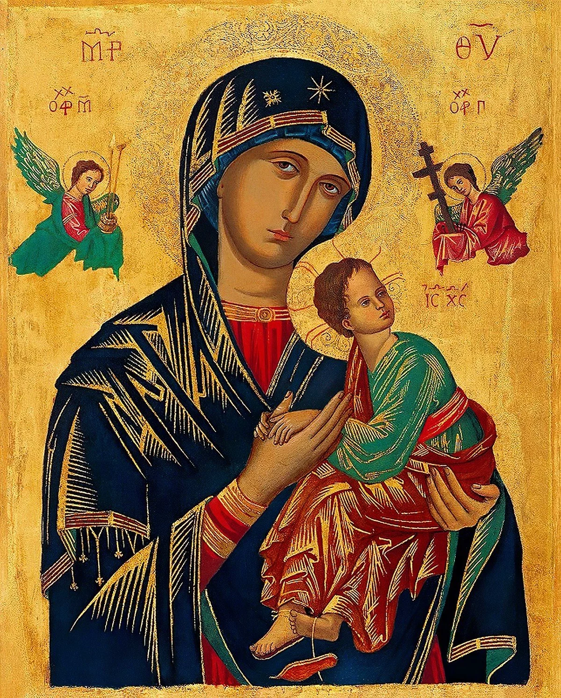

Terço douradopara rezar
01

Diante do ícone, o coração reconhece uma Mãe que não se afasta: Maria acolhe o Menino, contempla nossas dores e recorda que, em Jesus, nenhum pedido fica sem amparo.
Maria segura o Menino com ternura e firmeza, como quem acolhe também as angústias de cada filho que se aproxima.
Os anjos trazem os instrumentos da entrega de Cristo; no colo da Mãe, o medo encontra repouso e a fé aprende a confiar.
A devoção atravessa gerações porque fala ao coração: nas horas difíceis, há uma Mãe que intercede e conduz a Jesus.
Uma pausa para contemplar.
A luz atravessa a cena como uma lembrança silenciosa: Maria permanece perto, mesmo quando a oração nasce sem palavras.
Cada encontro com Nossa Senhora do Perpétuo Socorro nasce assim: primeiro o olhar se detém, depois o coração reza, e por fim a devoção encontra um sinal para acompanhar a vida.
Antes de qualquer palavra, o ícone fala ao coração: Maria acolhe o Menino e nos ensina a levar nossas dores para perto de Jesus.
Em cada dia, o devoto se aproxima com o que traz no coração: pedidos, gratidão, dores e esperança. Aos poucos, a oração vai colocando tudo nas mãos de Jesus, pelas mãos da Mãe.
Entregue a Maria aquilo que mais pesa no coração e peça a graça de confiar no socorro que vem de Deus.
Contemple o Menino nos braços da Mãe e peça um coração aberto para acolher Jesus em sua casa e em sua história.
Nas aflições, reze com confiança: nenhuma lágrima é desconhecida para a Mãe que permanece ao lado dos filhos.
Peça a graça de não desanimar na oração, mesmo quando a resposta parece silenciosa ou demorada.
Apresente a Maria tudo aquilo que precisa ser curado, purificado e reconduzido ao amor de Deus.
Confie a ela sua família, o trabalho, o pão de cada dia e as pequenas preocupações que pedem amparo.
Peça luz para atravessar as provações com fé, lembrando que a Mãe aponta sempre para a esperança em Cristo.
Agradeça pelos favores recebidos, pelos livramentos silenciosos e pela presença materna nas horas difíceis.
Consagre sua vida a Jesus pelas mãos de Maria e peça a graça de permanecer fiel, confiante e amparado.
Há sinais de fé que acompanham a rotina como uma pequena oração silenciosa. Cada peça aproxima a lembrança de Maria do dia a dia, para que o devoto carregue consigo confiança, gratidão e amparo.
Entre as contas e a medalha, cada Ave-Maria encontra um lugar de descanso. Uma peça delicada para rezar com beleza e recordar que Maria permanece perto.
Cada artigo nasce como um convite a manter viva a devoção: não apenas como objeto, mas como presença que recorda o cuidado de Maria e conduz o coração para Jesus.
Quando o olhar repousa nos detalhes, a devoção encontra forma sensível: a beleza se torna memória, e a memória conduz a oração.